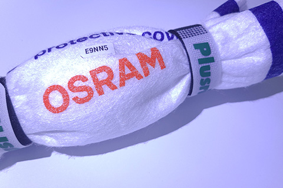
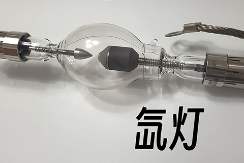
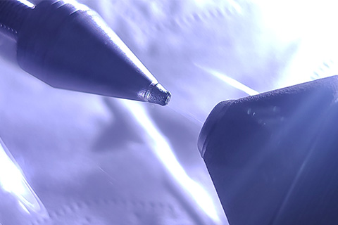
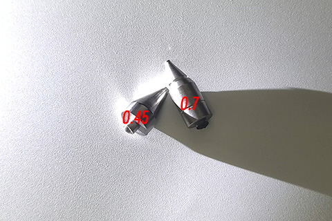

生活中的辐射源 大功率氙灯
Author: Xiao Yi | Category: 钍钨,氙气灯 钍钨电极属于一种特种钨电极，也是你能最容易买到的辐射源。但通常是焊接用钨钍电极
其实影院中的大功率氙气灯也会配备含有钍的电极，这是因为在钨中添加钍比单纯的钨电极电子发射性能好。
细节图:
但目前有被其他稀土电极（如钨铈电极）代替的趋势,新的材料电子发射能力比钨钍电极好，且耐用，最重要的——没有放射性污染/危害
我测量了两个不同型号的氙灯中的钍电极:
安全
这种钨钍电极最好让它们待在玻璃中——不要打破它们，打破并取出可能会面临放射性污染，即使非常轻微
此外将玻璃拿在手里是 100% 安全的，不会对健康造成任何影响。
0 Comments